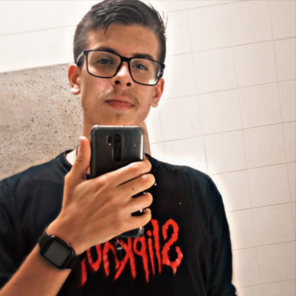
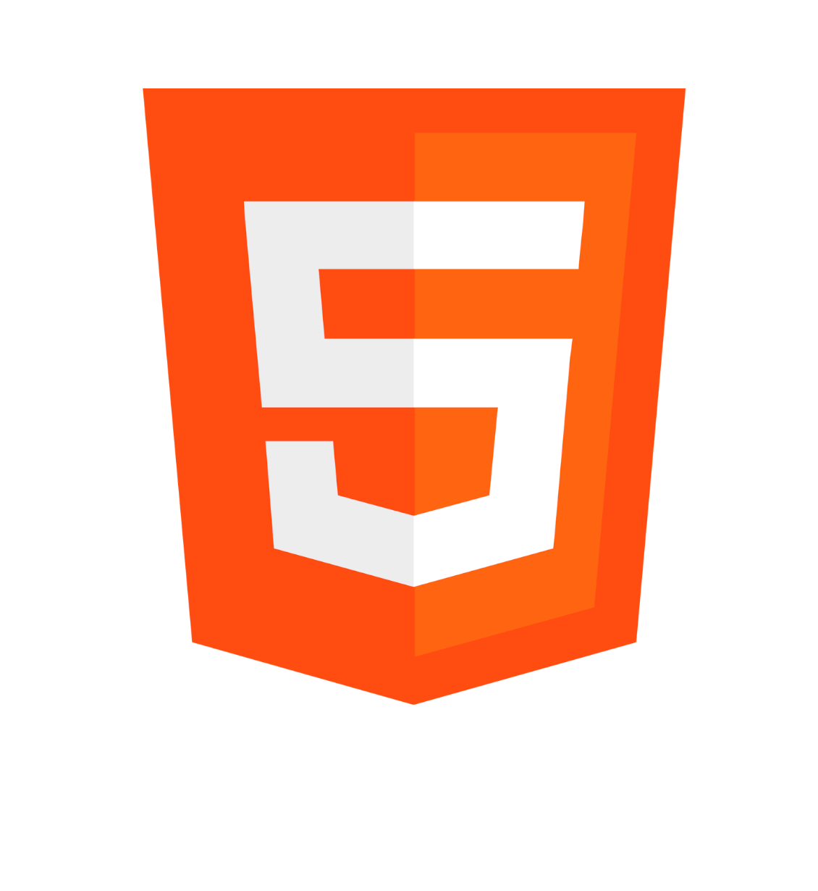
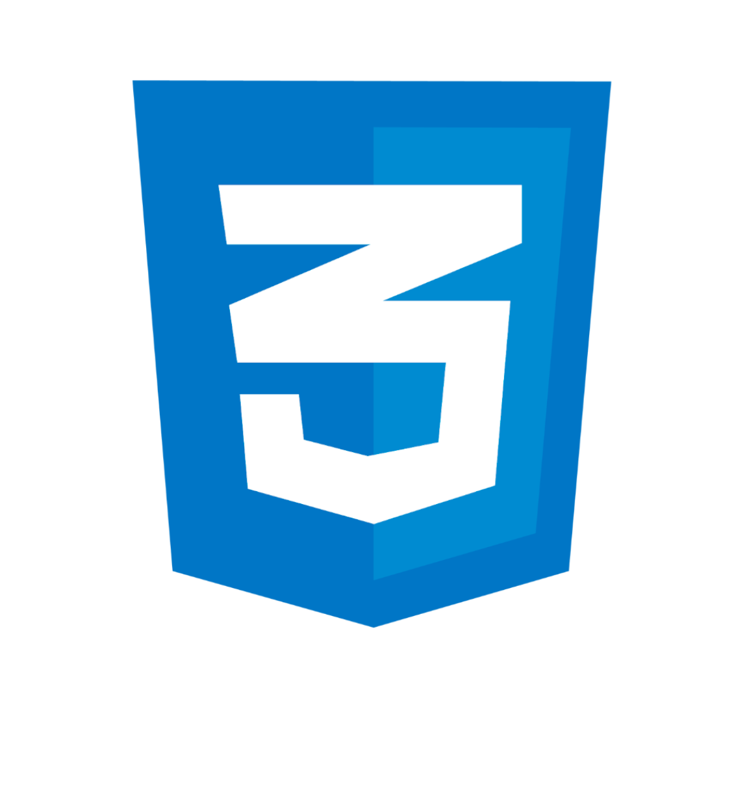
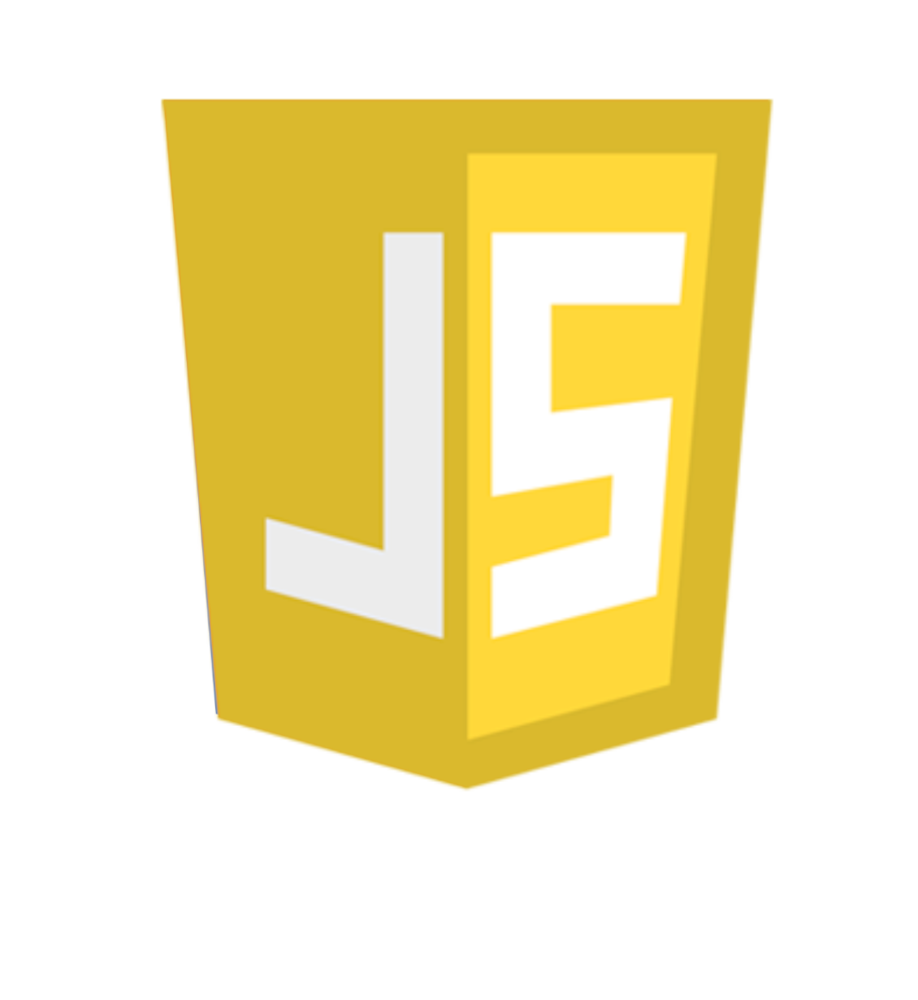
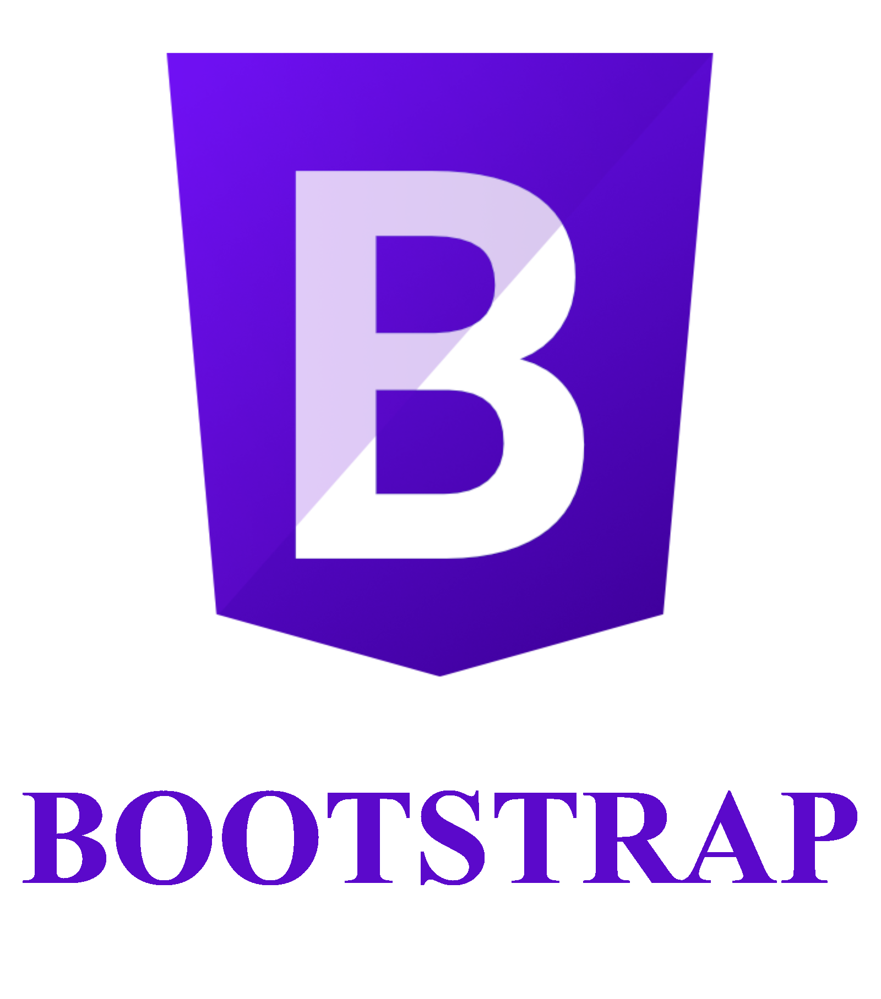
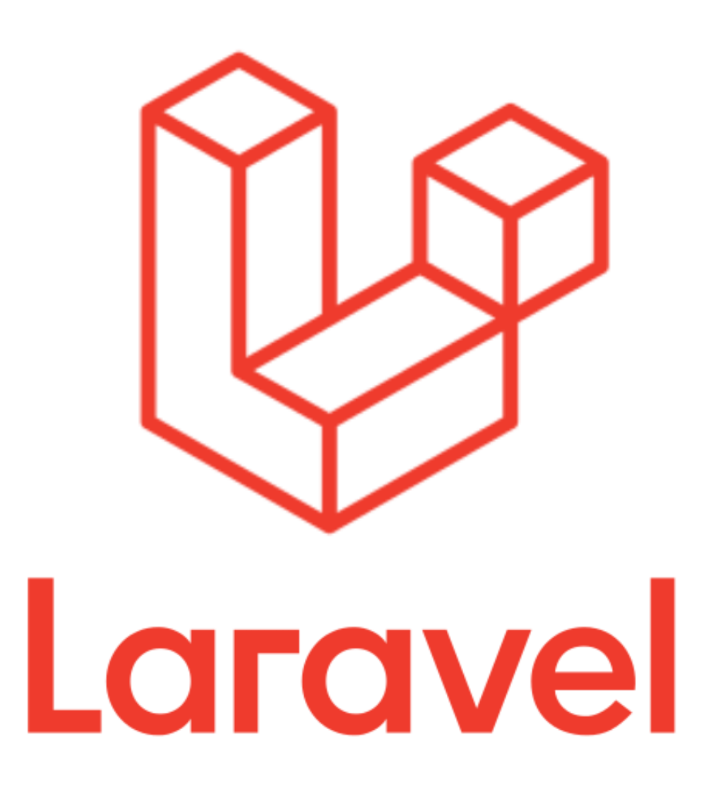

Sobre mim

Hello World! Me chamo Bruno Collange, tenho 20 anos, nascido em Osasco-SP, moro no interior de SP
e estou iniciando minha carreira em desenvolvimento WEB.
Sempre gostei muito de jogos eletrônicos, e foi por esse motivo que eu descobri esse mundo da
programação...
Interessado em saber como os jogos e programas de computador funcionavam, comecei aprender a codar em
JAVA,
e a partir daí que eu comecei a gostar muito da área de desenvolvimento.
Depois de um breve tempo com JAVA, eu conheci o desenvolvimento WEB
e me apaixonei ainda mais pelos códigos!
Atualmente estou cursando Análise e Desenvolvimento de Sistemas, e procuro por oportunidades
para ingressar nesta área de desenvolvimento.
Sou 100% comprometido e tenho um interesse enorme de adquirir cada vez mais conhecimento!
Conhecimentos
    
Após um tempo, conheci o desenvolvimento WEB e mergulhei fundo na aprendizagem. Hoje eu já
domino as ferramentas HTML e CSS (intermediário).
Sou iniciante na linguagem PHP, e também estudo outras linguagens
como JavaScript e frameworks como Bootstrap e Laravel,
e pretendo continuar seguindo na carreira de desenvolvimento WEB!